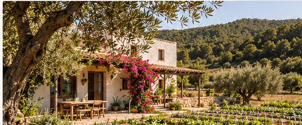
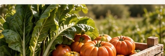
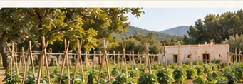
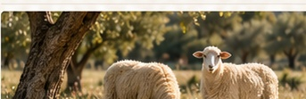
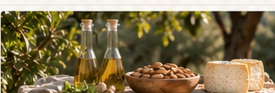
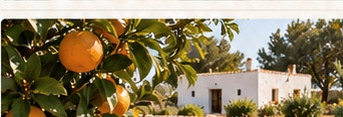

Discover Ibiza / Food & landFive farms.
Five farms.
One island.
Meet the local growers keeping Ibiza’s agricultural traditions alive.

A closer lookThe land tells
The land tells
a different story.
Beyond the beaches, Ibiza has a rich farming heritage. Across the countryside, a new generation is working alongside long-established growers to nurture the soil, celebrate seasonal produce and sustain rural communities.
Five to discover
An editorial selection


03
Can Zafiro Ibicenca
Traditional rural life, small-scale farming and respect for the land.
Discover more ↗
04
Ibiza con sabor
Small producers creating artisan food from the island’s generous harvest.
Discover more ↗
05
Can Cristòfol
Orchards, traditional cultivation and an invitation to discover island life.
Discover more ↗The future is rural.
Support the landscapes, businesses and people that make Ibiza special.